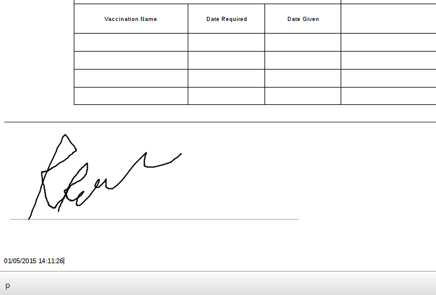
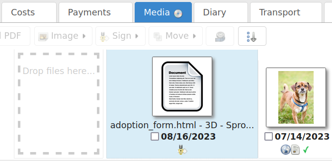
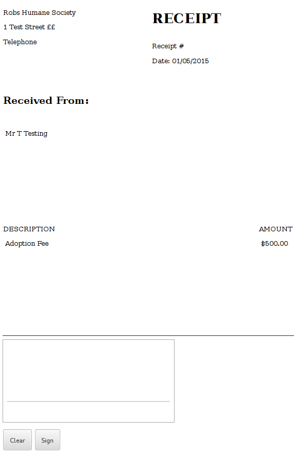

Documents¶
Animal Shelter Manager has extensive document abilities for creating forms and letters. The system also includes its own web-based word processor for handling this.
To create a document for use with the system, you can manage templates under . You embed keys in your document that will be substituted with real data when a document is generated. For a complete list of document keys, see Appendix: Wordkeys
Keys follow the format <<[Keyname]>>. For example, putting the tag <<AnimalName>> in your document will cause it to be substituted for the animal’s name.

A number of places in the system have toolbars with generate document buttons, you can find these:
On the animal details screen (creates documents with animal, person and movement information, useful for adoption paperwork)
On the person screen(creates documents with person information)
On the payments tab (creates documents with person, payment and animal information, useful for invoice and receipt templates)
However you choose to create the document, the process is the same. You select your document template from the dropdown list.

Once you have selected the template, the document will be generated and opened in the word processor, ready for editing and printing. If you hit the save button in the word processor, the document will be saved to the appropriate media tab of the animal/person you generated the document for.
You can also use the PDF button on the toolbar to generate and open a PDF of the document. This is useful as PDFs will be consistent across different machines running different operating systems and with different fonts installed.

PDF Directives¶
You can embed directives in your document to give some hints to the PDF engine. These should take the form of HTML comments, embedded in <!– and –>, and can be inserted by going to Tools->Source Code in the document editor:
<!-- pdf papersize a4 -->
To set the papersize to a4. Other options are a3, a5 and letter:
<!-- pdf papersize exact 89mmx36mm end -->
To set the papersize to an exact measurement (in this case 89mm x 36mm width x height, which is the size used by the Dymo 450 label printer):
<!-- pdf orientation landscape -->
To set the orientation to landscape. Portrait is the default but can be explicitly set too.
Use the margins directive to set the PDF margins:
<!-- pdf margins 2cm 2cm 1cm 1cm end -->
Margins are in the order top, bottom, left then right.
The PDF engine will scale the document to fit the page horizontally based on the widest element in it. Use the zoom directive to override this behaviour and specify a scaling amount (this sets a zoom CSS value on the body element):
<!-- pdf zoom 130% end -->
Most of these options are to wkhtmltopdf, a PDF renderer based on webkit (the engine used by the Chrome and Safari web browsers). An alternative, simpler PDF engine can also be used by specifying:
<!-- pdf renderer pisa -->
Electronic Signatures¶
Warning
Electronic signatures are only supported by ASM’s built in HTML-based word processor. They cannot be used with OpenOffice templates.
ASM allows you to add electronic signatures to documents. Signed documents are read only and cannot be edited. A cryptographic hash for the signed document is calculated and stored separately so that any future tampering can be detected.
There are multiple methods of adding signatures to documents:
“Sign on screen” menu item in the media tab (using a touchscreen monitor, wacom tablet, lightpen, other mouse-like device or if you are using a tablet computer)
“Signing Pad” mode of the mobile interface for any external touchscreen device (iPad, iPhone, Android phone/tablet, etc).
“Request signature by email” menu item in the media tab, which sends an email to the recipient of your choice (defaults to the current person if this is a person’s media tab) with links for them to follow to sign the selected documents with their own touchscreen device.
A signature that has been pre-stored for the currently logged in user (necessary for a staff signature in addition to the main signatory).
To use, select the documents you’d like to sign and click the “Sign” dropdown on the toolbar of the media tab. ASM allows you to use any generic mouse or touchscreen hardware and mobile touchscreen devices as signing pads - you do not need to buy expensive custom hardware.
Note
Once signed, a document cannot be edited. A maximum of two signatures can be recorded in a document - one for the signatory and one for the current system user.
To control the size and location of the signature:
insert an image where you’d like the signature to appear
When the insert image dialog requests the image source, instead of a URL, enter “signature:placeholder” without the quotes.
Choose a size to constrain the image to - eg: 150 x 75
The document signing module will insert the signature inside your image when the document is signed.
If your document template does not contain a signature placeholder, the signature will be attached to the document as a footer along with the date and time the document was signed.
In addition, an icon will appear next to the document on the media tab to indicate that the document has now been signed.
Mobile Signing¶
The “Mobile signing pad” menu item allows you to mark the document for signing in the mobile interface.
If you visit ASM’s mobile interface on any mobile/tablet device, you can use the “Signing Pad” link in the mobile interface to go into signing pad mode.
Warning
The mobile interface must be logged in with the same user account as the person who clicked the “Signing Pad” button on the media tab. This prevents users signing other’s documents and eliminates confusion in multi-site use.
Once in signing pad mode, the interface waits for documents to sign. When documents are received, they can be reviewed in the mobile interface with a signature pad below for the person to sign. This is useful for adoption and other paperwork and allows you to keep contracts in a completely electronic manner without the need for paper. You can still print off signed documents or email them in PDF form to adopters directly.
User Signatures¶
It is quite common for documents to require a member of staff signature as well as the main signatory (eg: new adopter/volunteer/etc. ). In order to add a second signature to a document, the user’s signature must be stored within the system. This means the system can insert the user’s signature into the document which can then be signed using the signing pad - it isn’t currently possible to add multiple signatures to a single document using the signing pad.
Each user can store their own signature in the “Change User Settings” page, accessed under the user menu (the menu with the logged in user’s name at the top right of the screen).

You can add a placeholder for the current user’s signature in your document templates with the <<UserSignature>> wordkey. This will insert the signature at full size into the document as an image.
If you’d like to control the size and placement of the user’s signature in a similar manner to normal signatures, you can insert an image and when prompted for the image source use “signature:user” without the quotes.